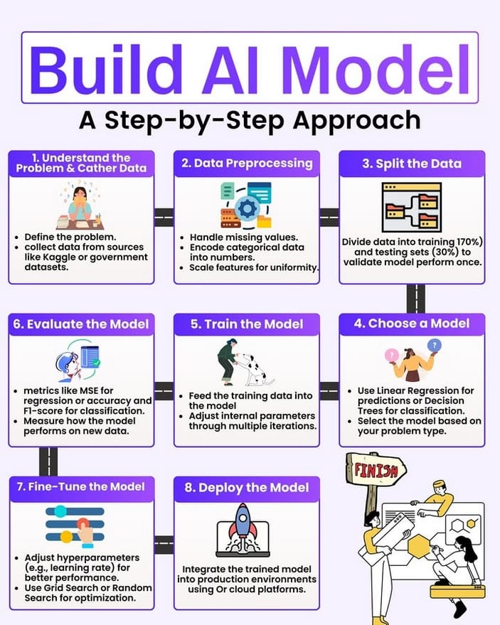
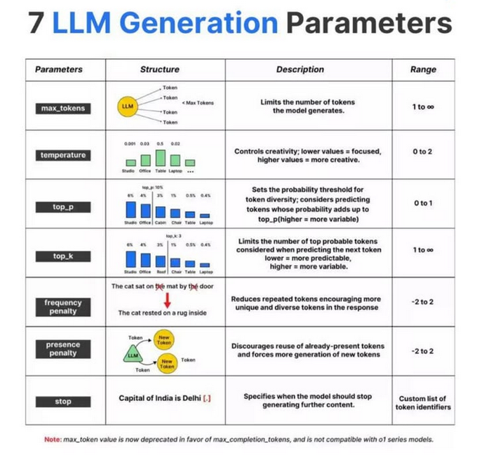
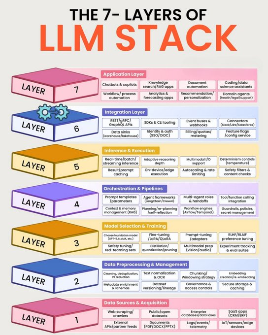
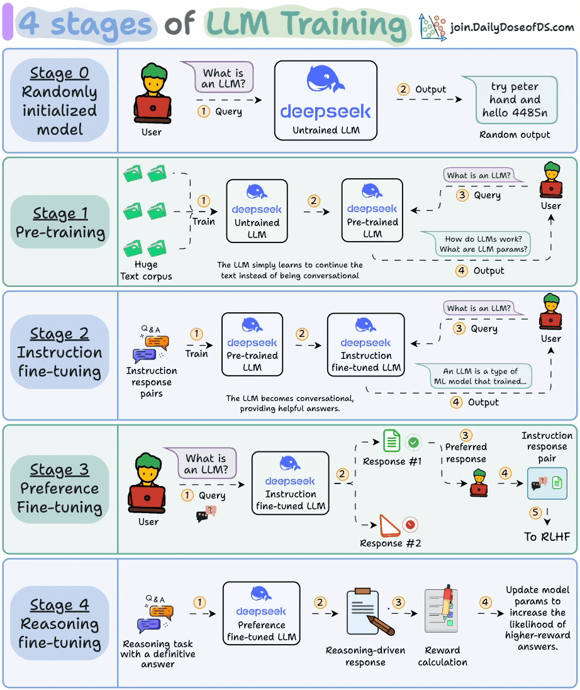

What is a Large Language Model (LLM)?
A Large Language Model (LLM) is a type of neural network trained on massive text corpora to generate, understand, and translate human language. Most modern LLMs are based on the Transformer architecture and use techniques like self-attention and autoregression.
Core Components
- Tokens & Embeddings: Text broken into tokens and converted to vector representations
- Attention Mechanism: Allows models to understand relationships between words
- Transformer Blocks: Stacked layers of attention and feed-forward modules
- Positional Encoding: Adds sequence order information to embeddings
LLM Generation Parameters
Limits the number of tokens the model generates in its response.
Controls creativity: lower = focused, higher = creative/random.
Nucleus sampling: considers tokens whose cumulative probability adds to top_p.
Limits consideration to the top K probable tokens when predicting next token.
Reduces repeated tokens, encouraging more unique/diverse tokens in response.
Discourages reuse of already-present tokens, forcing new token generation.
Available LLMs with APIs
from bs4 import BeautifulSoup
response = requests.get('https://example.com')
soup = BeautifulSoup(response.text, 'html.parser')
text = soup.get_text()
- Learn web scraping ethics and robots.txt
- Practice with Scrapy tutorial
- Explore Common Crawl dataset structure
dataset = load_dataset("c4", "en", streaming=True)
for example in dataset['train']:
print(example['text'])
headers: {'X-Api-Key': 'YOUR_KEY'}
});
const data = await response.json();
FROM corporate_docs
WHERE status = 'approved'
AND category IN ('technical', 'legal')
LIMIT 10000;
con <- dbConnect(RSQLite::SQLite(), "company.db")
docs <- dbGetQuery(con, "SELECT * FROM documents")
text_corpus <- docs$text
import unicodedata
def clean_text(text):
text = unicodedata.normalize('NFKD', text)
text = re.sub(r'\s+', ' ', text)
return text.strip()
tokenizer = AutoTokenizer.from_pretrained("gpt2")
tokens = tokenizer.encode("Hello world!")
print(tokens) # [15496, 995, 0]
m1 = MinHash()
for word in text1.split():
m1.update(word.encode('utf8'))
similarity = m1.jaccard(m2)
chunks = []
start = 0
while start < len(text):
end = start + chunk_size
chunks.append(text[start:end])
start += chunk_size - overlap
return chunks
model = AutoModel.from_pretrained(
"meta-llama/Llama-2-7b-hf"
)
from transformers import GPT2LMHeadModel
model = GPT2LMHeadModel(config)
optimizer = torch.optim.AdamW(
model.parameters(), lr=1e-4
)
trainer = Trainer(
model=model,
args=training_args,
train_dataset=train_data
)
trainer.train()
config = LoraConfig(r=8, lora_alpha=32)
model = get_peft_model(model, config)
model.print_trainable_parameters()
model = AutoModelForCausalLM.from_pretrained(
"model_name",
load_in_8bit=True
)
wandb.init(project="llm-training")
wandb.log({"loss": loss, "lr": lr})
template = "Analyze {topic} focusing on {aspect}"
prompt = PromptTemplate(
input_variables=["topic", "aspect"],
template=template
)
from langchain.llms import OpenAI
llm = OpenAI(temperature=0.7)
chain = LLMChain(llm=llm, prompt=prompt)
result = chain.run(topic="AI")
constructor(maxTurns = 10) {
this.history = [];
this.maxTurns = maxTurns;
}
add(role, content) {
this.history.push({role, content});
if (this.history.length > this.maxTurns) {
this.history.shift();
}
}
}
generator = pipeline('text-generation',
model='gpt2')
result = generator("Hello, my name is",
max_length=50)
import hashlib
@lru_cache(maxsize=1000)
def cached_inference(prompt_hash):
# Run inference
return result
import time
@limits(calls=10, period=60)
def call_llm_api(prompt):
return api.generate(prompt)
app = FastAPI()
@app.post("/generate")
async def generate(prompt: str):
result = model.generate(prompt)
return {"text": result}
const typeDefs = gql`
type Query {
generate(prompt: String!): String
}
`;
def send_webhook(url, data):
response = requests.post(
url,
json={"result": data},
headers={"Content-Type": "application/json"}
)
return response.status_code
def chat(message, history):
response = llm.generate(message)
return response
gr.ChatInterface(chat).launch()
from langchain.embeddings import OpenAIEmbeddings
embeddings = OpenAIEmbeddings()
vectorstore = Pinecone.from_documents(
docs, embeddings, index_name="my-index"
)
const response = await fetch('/api/generate', {
method: 'POST',
body: JSON.stringify({
prompt: `Write a blog post about ${topic}`
})
});
return response.json();
}
library(jsonlite)
analyze_data <- function(data_summary) {
response <- POST(
"https://api.openai.com/v1/chat/completions",
add_headers(Authorization = paste("Bearer", api_key)),
body = toJSON(list(
model = "gpt-4",
messages = list(list(
role = "user",
content = paste("Analyze:", data_summary)
))
), auto_unbox = TRUE)
)
return(content(response))
}
CREATE TABLE user_preferences (
user_id INT,
preference_type VARCHAR(50),
preference_value TEXT,
embedding VECTOR(1536)
);
-- Query similar preferences
SELECT user_id, preference_value
FROM user_preferences
ORDER BY embedding <-> query_embedding
LIMIT 5;
from sagemaker.huggingface import HuggingFaceModel
model = HuggingFaceModel(
model_data="s3://path/to/model",
role=role,
transformers_version="4.26"
)
predictor = model.deploy(
initial_instance_count=1,
instance_type="ml.g5.xlarge"
)
WORKDIR /app
COPY requirements.txt .
RUN pip install -r requirements.txt
COPY . .
EXPOSE 8000
CMD ["uvicorn", "main:app", "--host", "0.0.0.0"]
request_count = Counter('llm_requests', 'Total requests')
latency = Histogram('llm_latency', 'Response time')
@latency.time()
def process_request(prompt):
request_count.inc()
return model.generate(prompt)
Reference Graphics
Here are the original reference images used to create this guide:
| Infographics | |
|---|---|
 |
 |
|  |  |
 |
 |
Original Prompt
Generate an HTML app with JavaScript (no REACT) that provides actionable and clickable guide for "Large Language Model (LLM) Guide" to resources for code snippets, tutorials, descriptions, illustrations for each of these concepts from the graphics. Assume Intermediate level. Organize the app according to Seven layer design. Include Terms and parameters. Define what an LLM is and the generation parameters. Also desire for the app to lead a user through the steps of designing, building, AND DEPLOYING an LLM. Include links and Resources to existing LLMS with APIs for programmatic interaction. Include information and examples in Python, SQL, R, and JavaScript. Use a clickable tile for each concept and each should have a clickable checkmark that I can use to mark the concept as complete. Follow the Checklist graphic where each item is a tile. On each tile put the links to resources, descriptions, and action steps.
Note: The reference graphics were used to design the structure and content of this application. They covered LLM concepts, generation parameters, the 7-layer LLM stack, fine-tuning terms, and training stages.